vamo, vamo, vamo…
Ex-sedentário
CORRIDA E CAMINHADA DROGA MATA & ESPORTE SALVA
136 years
by Ana Shibata
in Ex-sedentário
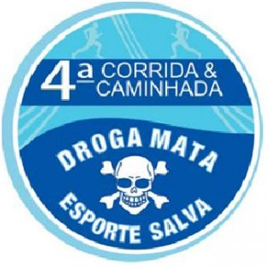
                VAMOS ABRAÇAR ESTA CAUSA?!
Â
Acontecerá no dia 18/09, a 4ª CORRIDA E CAMINHADA DROGA MATA, então anote e divulgue para os amigos:
DIA DO EVENTO – 18/09/2011
LARGADA: 8h
LOCAL: CENTRO DA VILA MATILDE – SÃO PAULO
            200 METROS DO METRÔ GUILHERMINA.
PERCURSO 5KM Corrida de rua
                  2KM Caminhada
PUBLICO ALVO: adultos, menor acompanhado pelo responsável
INSCRIÇÃO E MAIORES INFORMAÇÕES:  corridadrogamata@terra.com.br (enviar e-mail solicitando ficha de inscrição)
VALOR: 02 KILOS DE ALIMENTOS
SITE DO EVENTO: http://www.drogamata.com.br/
Já efetuei a minha inscrição e de famÃlia, venha vc também!!!
Ana Maria
Hoje é dia ….
56 years
by Ana Shibata
in Ex-sedentário
PARABÉNS HOJE É SEU DIA……..
QUE DIA MAIS FELIIIIIIIIIZ
Â
Pois é gentemmmmmmmmmmm, hoje é dia do Claudião assoprar mais uma velinha,
Â
Desejo-lhe muiiiiiiiiita saúde, paz, amor, harmonia, dindim no bolso e,
principalmente,
muitos km e provas
Â
Um abração!
Â
Ana Maria
Â
Â
Â
Â
Â
Â
Â
Â
Assumindo a postura de BLOG!
96 years
by Alecão
in Ex-sedentário
Durante algum tempo nós tÃnhamos (eu e o Claudio) uma indefinição do que se tratava o “Cia. Ex-sedentário”. Hoje, por telefone, decidimos assumir a nossa verdadeira postura.
Antes vou relembrar algumas coisas:
Este site surgiu como uma forma de verborragia de sentimentos… Com a vontade de expor as dificuldades e colher os apoios. Desta forma crescemos, formamos amigos e fomos criando uma certa identidade. Com o tempo surgiu mais pessoas interessadas neste modelo, relatar e receber apoio. Thiago, Ana, Luciano, Andrea e Melinha! Outros entraram e depois desistiram. Neste tempo o termo “Ex-sedentário” começou a ficar confuso. Pois no singular indica uma pessoa e já eramos muitos.
Com isso surgiu a necessidade de melhorar a identidade e alteramos para o nome “Cia. Ex-sedentário”. O Cia. na frente do nome serviu para indicar que se tratava de mais de uma pessoa, assim evitando a confusão.
Durante esses 2 anos de blog, foi inevitável a confusão do conceito de blog com o conceito de Equipe. Chegamos a planejar a confecção de camisetas, chegamos a fazer um revezamento como “Ex-sedentários”…
Hoje durante uma conversa com o Claudio, percebemos que na realidade somos um Blog e não uma equipe. Somos pessoas unidas por um ideal (ideal esse que dá nome ao Blog). E essa nova postura nos dá a chance de abraçar as equipes já existentes. Elas que tem um motivo para serem fortes e unidas. Essa nova postura nos dá a chance de participar de várias festas, de sermos livres e felizes.
E é com prazer que digo aqui que o Blog agora pertence a todas as equipes que nos aceitarem. Como diz a música:
Eu sou de ninguém
Eu sou de todo mundo
E todo mundo me quer bem
Eu sou de ninguém
Eu sou de todo mundo
E todo mundo é meu também
No painel lateral, já temos o logotipo (com o link para o site) de 2 equipes que nos acolheram e que sempre querem o nosso bem:

Nós somos 100 JuÃzo
Nós somos Baleias
Ex- sedentarios na Maratona Internacional de Assunção- Paraguai
86 years
by Ana Amélia
in Ex-sedentário
O Blog fez 2 anos, viva !!!!!!!
E para comemorar este novo ano do blog, eis um relato internacional:
Eu, a Ana Shibata e Claúdio Dundes partimos rumo a Assunção para começar uma nova etapa em nossas vidas de corredores: participamos da nossa primeira corrida internacional e com muito estilo!!!
Acompanhem nossa aventura!
Dia 5 de Agosto:
As 9h20 pegamos o vôo para o Paraguai com a companhia do grupo de corrida Baleias, já mencionado algumas vezes pelo Alecão e pelo Cláudio.
O pessoal é super simpático e descontraÃdo…fizemos uma farra, sorte que a aeromoça era boazinha…rsrsrs
 Â 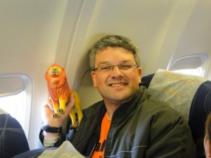Â
 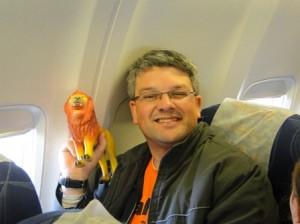 
Chegamos as 11h35 no Aeroporto de Assunção e lá mesmo tiramos fotos e conhecemos o resto do pessoal que nos acompanharia pelos próximos dias.
 Â
 

A organização da corrida disponibilizou uma van para nos levar ao Hotel Chaco, lugar confortável, barato, com funcionários super atenciosos e perto de tudo!
Feito o check-in, deixamos as malas e os casacos (achamos que ia estar frio, mas chegando lá estava 30ºC) e fomos retirar os kits na Expo Maratona que ficava na antiga ferroviária de Assunção. O kit era composto pela camiseta, um boné da Adidas, alguns chaveiros e como parte da inscrição ainda tÃnhamos um seguro de vida, que após a conferência de dados nos dava uma toalhinha com um elástico para prender no pulso!
Passeamos pela feira, experimentamos o Powerade de Maçã, a famosa CHIPA que é um pão de queijo com um toque de erva doce e deixamos nossa marca lá em Asunción.
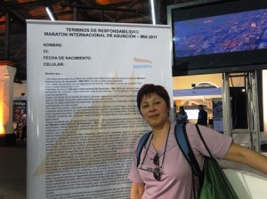 

 Â
  Â
 
Por volta das 18h30 assitimos ao show de uma banda que tocava rock e animou a galera.
 Â
 
A noite jantamos no El Bolsi, um restaurante super bonitinho, com uma comida muito boa e que apesar de ter dado 1.634.000,00 era super em conta.
 Â
  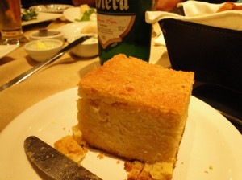Â
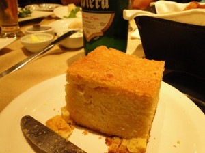Â  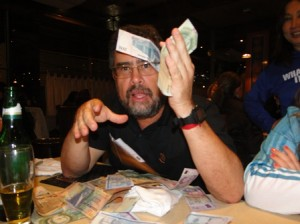Â 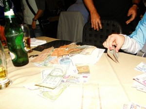
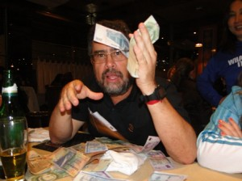Â 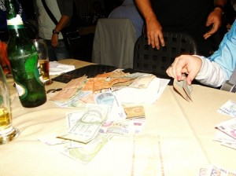

Detalhe:
a Myrtha, organizadora da maratona, foi jantar conosco e ganhou um mimo dos Baleias, um pingente de ouro, entregue pelo Wu!!!
Após o jantar maravilhoso, eu estava super cansada e não via a hora de dormir. Seguimos de volta ao Hotel.
 Dia 6 de Agosto:
No sábado, acordamos cedo (Ana Shibata e eu), tomamos café e fomos explorar a cidade. Paramos em um outlet da Adidas e fizemos algumas comprinhas…rsrsrsrs almoçamos e nos econtramos com o grupo Baleias para fazer um tour nos pontos históricos da cidade.
*** Por um infeliz desastre, perdemos as fotos de sábado, e eu só tirei essas 2 com a minha máquina 🙁
Museu da Indepedência e a Catedral Metropolitana de Assunção
 Â Â
  
Andamos muuuito e pra ajudar, tava um sol de rachar a “moringa”. Fomos até o palácio de Los Lopez e de lá voltamos ao hotel, porque estava impossÃvel de andar pela cidade sem água e com o sol forte.
De noite voltamos à ferroviária e participamos do jantar de massas e encerramento da feira, com direito a muita música paraguaia!
Fui logo dormir porque estava com dores nas pernas da andança pela cidade.
Dia 7 de Agosto:
DOMINGO!
Finalmente o dia tão esperado!!!
Nervosismo, ansiedade, felicidade e alegria eram os sentimentos pairando no ar!
Levava uns 7 minutos do hotel até a largada. Chegando lá tiramos mais fotos com a turma de cetáceos…kkk e logo fomos para a largada. Quase chorei de emoção!
 Â
 
Ah nem comentei o mais importante: o presidente Fernando Lugo estava presente no Ãnicio da corrida, dei uma de paparazzi e tirei uma fotinho enquanto ele andava..hehehe

Após o discurso do presidente e a seqüência de fogos, deu-se a largada e partimos rumo aos 10k. No começo o clima estava ameno, os moradores ficavam na calçada torcendo por nós, uma imensidão de pessoas de verde e alguns de laranja, tomavam conta das ruas de Assunção. Em Asunción eles não fecham a rua como aqui no Brasil, lá os guardinhas ficam controlando o fluxo e o pessoal respeita muito os pedestres, tanto é que vi no máximo uns 5 semáforos em toda a cidade.
Uma hora depois da corrida sentia-se um calor muito grande, ao passar por um termômetro eletrônico, marcava 29º. Terminei a prova com 1h34, não fui tão bem como esperava e andei uma grande parte do percurso, devido à falta de treino.
Cheguei a tempo de tirar foto da minha querida mãe atravessando o portal e logo fomos pegar nosso isotônico ( se aqui em São Paulo estamos acostumados com 1, lá eles te davam 3), pegamos uma sacolinha que continha Bananas, maçã ou mexerica, um suco e uma barrinha de cereal muito saborosa. Encontramos um cantinho e sentamos pra respirar! A Drª Ana estava extasiada!!!!
 Â
 
Foi uma alegria ter completado a prova e como eu mencionei no dia: senti que tinha cumprido meu dever.


Depois de descansar um pouco, ficamos na arquibancada torcendo por nossos companheiros!


 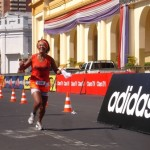
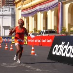  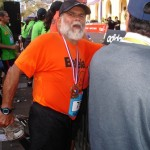
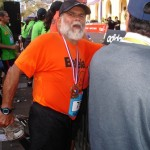 


 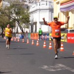 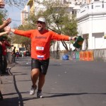
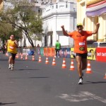 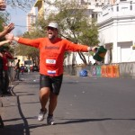


Se Deus quiser ano que vem estaremos de volta a Asunción, mas eu pretendo correr a meia maratona!
Será que consigo? Vou tomar vergonha na cara e começar a treinar para ano que vem fazer bonito na frente dos Baleias que conquistaram 4 troféus!
Espero também que a turma do Ex Sendentários esteja completa dessa vez!
Por último, mas não menos importante, gostaria de agradecer aos Baleias que nos acompanharam nesta maravilhosa viagem!!!
Que venham mais corridas e junto, mais posts!!!
***Especial***
 Abaixo vocês conferem a nossa homenagem ao Henrique, filho do Cláudio, que nos emprestou o Leãozinho que fez sucesso entre os paraguaios e paraguaias!!!
La Fuerza do Leonzito!!!!!!
 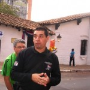
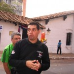  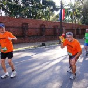 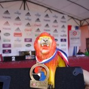
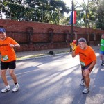 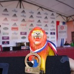 


Beijão 😀
Melinha
Come̤ando a recordar РEquipe TAEQ
26 years
by Alecão
in Ex-sedentário
O site da TAEQ tirou meus post do ar, mas eu tinha eles guardados no meu computador.
E hoje eu resolvi coloca-los aqui no Cia. Ex-sedentário.
Estes posts fazem parte de um passado de transformação e estou colocando eles aqui para depois fazer um post de balanço:
- Como você pretende encarar esse desafio?
- Novamente um recomeço
- Segunda caminhada
- Primeira Corridinha
- Exames
- Ainda bem
- Domingo é dia de parque
- Super Equipe
- Mudança de hábito
- Primeiro dia na academia
- Caminhada de 6 Km
- Mula de carga
- Cautela
- Ansiedade
- Papai conseguiu
- Depois da prova
- Voltando aos treinos
- Valeu a pena
Os posts podem ser acessados também pelo link da Tag: Aventuras do TalEQs
Com isso, vou para 117 posts aqui no Blog…. é muita história!
Segundo aniversário do Cia. Ex-sedentário
76 years
by Alecão
in Ex-sedentário

Pois é, 2 anos se passaram desde aquela ideia maluca. O site ficou abandonado nos últimos 2 meses. Um pouco disso porque vários incidentes marcantes aconteceram com os ex-sedentários nestes últimos meses.
Mas a ideia continua viva. Muito viva mesmo, apenas não estávamos relatando.
Nesses 2 anos, fiz muitos amigos virtuais e reais. Comecei admirar a garra, força, determinação, união, solidariedade, carinho desses novos amigos.
E consegui realizar um sonho de infância que foi correr a São Silvestre. Isso para mim significou muito, pois tive olho torto de médico e mesmo obeso eu consegui correr pelo menos 10 Km dos 15 Km…
Esta vitória pessoal e o companheirismo fez mudar o meu pensamento, fez eu entender que desejando tudo é possÃvel. Este entendimento era claro, mas mesmo assim tinha dúvida e não conseguia acreditar em mim. De repente houve um estalo na minha vida. Noites e noites (e dias também) de reflexão me ajudaram a entender ondem estava o MEU problema, detectado, tive que entrar em ação. Deixei a corrida de lado e comecei a mudar vários aspectos da minha vida pessoal. Mas principalmente comecei a mudar a minha interpretação sobre o mundo em minha volta.
Dentro destas reflexões e mudanças, resolvi primeiro ficar magro antes de voltar a correr para valer (leia-se meia e maratona). E entendi como funciona a compulsão e comecei a trabalhar a causa e não mais o efeito. Isso trouxe um resultado muito positivo, pois em menos 2 meses perdi 9 Kg e hoje já estou 4 Kg mais magro que quando corri a minha última corrida.
Meu sonho quando fiz este site era falar sobre minhas peripécias sobre deixar de ser sedentário (por isso do termo ex-sedentário). Descobri que deixar de ser sedentário, antes mesmo de forçar a barra correndo e mudar a atitude mental. O foco em corridas veio do Claudio que é amante delas. Mesmo correndo várias e gostando, tenho vontade de voltar a praticar uma paixão antiga, o ciclismo. E através deste post quero dizer que vou começar a pedalar no próximo final de semana e claro que vai ter post relatando.
Quero também ao longo deste mês, trazer para cá, os meus depoimentos sobre a minha passagem pela Equipe de Blogueiros TAEQ, aventura essa que merece um post a parte, porque ali foi o embrião de toda a minha transformação de atitude.
O ciclismo vem para ficar, mas claro que não vou abandonar as corridas, apenas diminuir o ritmo (ou melhor, voltar a ter um). E aqui já digo que três provas até o final do ano eu irei participar. E são na realidade para mim 3 festas… 3 animações… 3 reencontros com amigos… 3 vitórias.
- Maratona de Revezamento do Pão de Açúcar (5K)– Aqui é a festa da nossa equipe Cia. Ex-sedentário, onde temos o prazer de juntar os amigos e familiares dos autores deste blog. É uma festa, porque necessita do espÃrito de equipe para acontecer e isso é muito gratificante. No ano passado, apesar de me dizerem que eu era elite por correr patrocinado, eu queria mesmo era correr com a minha equipe, sofri pacas.
- Maratona de Curitiba (10K) – Festa Baleias. A ideia é o manto coral tomar conta, correr com os muitos amigos que fiz durante esta jornada. é uma festa porque ser Baleias é viver em festa. Esta alegria me contagiou pra valer. Será minha primeira corrida em viagem. Tem toda a logÃstica que deve ser feita com antecedência… Isso é muito louco. Estou curtindo isso.
- São Silvestre (15K) – Para fechar o ano, a melhor festa de todas. O clima é contagiante… Muita gente feliz… E neste ano que correr todo o percurso. E com isso fecharei o ano e carimbar o meu passaporte da mudança de atitude.
2012 ainda esta para ser planejado. Mas com certeza será o ano da minha estréia em meia maratona. Até lá o peso extra não existirá mais e correr será algo tranquilo para mim.
Quanto ao ciclismo… Apenas vontades ainda não materializadas em planejamento. Quero voltar a pedalar aos poucos e quem sabe conseguir romper a barreira dos 100 Km em um único dia, que já consegui uma vez em minha vida e quero superá-la.
Um dia 100 JuÃzo, mas de Fé!
127 years
by Claudião
in Ex-sedentário
Fui desajuizado ao ter me mantido inerte, sem treinar, mesmo diante do maravilhoso convite do Fabio Namiuti. Desajuizado que fui também ao ter engordado ainda mais nesse tempo parado.
Mais do que isso fui desajuizado em ter me afastado também dos tantos amigos maravilhosos que a vida corrida me deu. Poderia ficar aqui descrevendo todos os nomes. Do meu Mestre Thiago à Dani Kato há um mundo de gente que eu adoro e não merecia um sumiço.
Contudo, fui muito feliz em ter sido um Baleias 100 JuÃzo no último sábado.

Baleias, 100 JuÃzo, na estrada,

a caminho da Fé renovada.
Como diz meu irmão Miguel Delgado, “o mundo que corre” já conhecia a grandeza da equipe 100 JuÃzo e o jeito amigo do Fábio Namiuti. Agora com um jeito todo Acorjeano de fazer eventos memoráveis com equipes amigas e quem mais aparecer. Cia Ex-sedentário e Baleias estão aqui para somar a tudo isso, sempre!
Alecão, minha alma gêmea, já tinha me dito que da parte deles não haveria qualquer desapontamento com a minha falta de forma.
Os relatos maravilhos já feitos dão conta do quanto foi desafiador, organizado e impregnado de carinho a pelegrinação corrÃstica. Foi contagiante e revigorante, especialmente para mim que estava tendo muita dificuldade de achar o prumo.
Abaixo a prova de que  mesmo uma barriga grande e sedentária é bem-vinda a brindar a vida e viver momentos intensos, tanto quanto musas inspiradoras de viagens com as pernas e ultramaratonas.  Â

Mais uma vez eu retornarei forte ao caminho da Maratona. Paraguai está aà e Curitiba me espera para conclui-la em menos tempo.
Aos amigos de quem me distanciei eu aviso: retornei, forte e feliz de novo.
Meu abraço especial ao querido amigo Fábio Namiuti

Agradeço aos Fábios, Namiuti e Matheus, por não terem me deixado prosseguir na idéia de me autoflagelar com um caminhada solitária de 37km. Ganhei muito mais, com os des quilômetros trotados (devagarinho) e com tudo que vivi com os amigos.
 Enalteço o que já disse o Guilherme Maio,  o Fábio Matheus é gente da melhor qualidade. Assim como os demais integrantes da 100 JuÃzo, turma especial com a qual muito mais corredores se aliarão para a esperada Maratona da Fé que virá.
19ª Maratona Pão de Açúcar de Revezamento de São Paulo
67 years
by Ana Shibata
in Ex-sedentário
Chamada Geral!!!
 Â
 PRIMEIRA:  KD ESSA TURMA DE    SEDENTÃRIOS ?!Â
 Â
 SEGUNDA:
Já estão abertas as inscrições para a 19a Maratona de Revezamento PA que será realizada no dia 18 de setembro de 2011, à s 7h. A largada acontecerá na Av. Pedro Ãlvares Cabral, próxima ao Obelisco do Ibirapuera, São Paulo.
 As equipes poderão ser composta por 2, 4 e 8 atletas.
As inscrições antecipadas terão desconto, veja abaixo:
Até 26/05/2011 = R$ 55,00 cada participante
Até 30/06/2011 = R$ 60,00 cada participante
Até 18/08/2011 = R$ 65,00 cada participante
A partir de 19/08/2011 = R$ 75,00 cada participante – para vagas remanescentes.
Â
Claudião está pensando num mega empreendimento…….. hummmmmmmmm, será que falo (ops….escrevo)?!
Â
Link do evento: www.maratonapaodeacucar.com.br
Â
  Ana Maria
Não leve a vida tão a sério
57 years
by Ana Shibata
in Ex-sedentário
Desculpe me intrometer na sua vida assim tão diretamente.
Não sei se é o caso de entrar nesse assunto agora mas vou tomando a liberdade de amiga pra dizer:
Será que alguém muito especial, não anda meio esquecido de sua agenda?
Sabe quem?
Essa pessoa está olhando para a tela agora.
É… Você mesmo!
Está tudo bem ou a comunicação interna anda complicada?
Você quer fazer uma coisa, faz outra?
Quer dizer algo pra alguém e acaba falando uma bobagem?
Ou, pior, quer falar de paz e…
Acaba entrando em guerra e arrumando mais problemas?
Você está dando a devida atenção para os seus sentimentos?
A vida não precisa ser levada tão a sério!!
Pegue leve com você e com os outros.
Não entre nessa de levar tudo a ferro e fogo…
Descontraia sempre que a corda estiver muito tensionada pois se arrebentar não tem mais jeito.
Ria, ria muito, ria sempre – com os amigos…
Com seu cachorro, com o que for – e principalmente ria de si mesmo.
Rir refresca a alma e lubrifica a mente.
Olhe para dentro de si e acredite:
Você é uma pessoa única e especial!
Respeite-se.
Dê valor aos seus sentimentos.
Acorde a sua confiança e a sua fé.
Como dizia Oscar Wilde:
“A vida é importante demais para ser levada tão a sério”. (anônimo)
Um final de semana esplendoroso!!!     Â

.jpg "DSC01859 (1024x576)")
.jpg "DSC01867 (1024x576)")
.jpg "DSC01895 (576x1024)")
.jpg "DSC01925 (1024x576)")
.jpg "DSC01945 (1024x576)")
.jpg "IMG_7311 (1024x768)")


{kind=link}
Últimos comentários